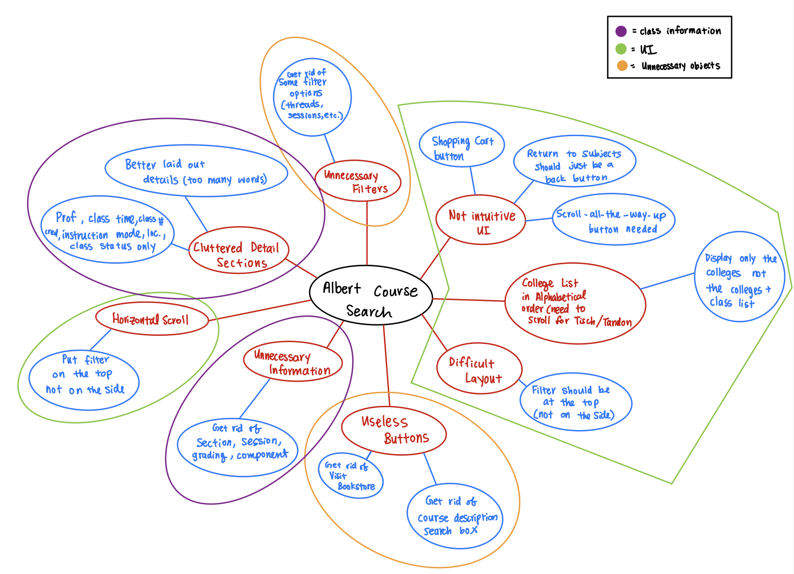
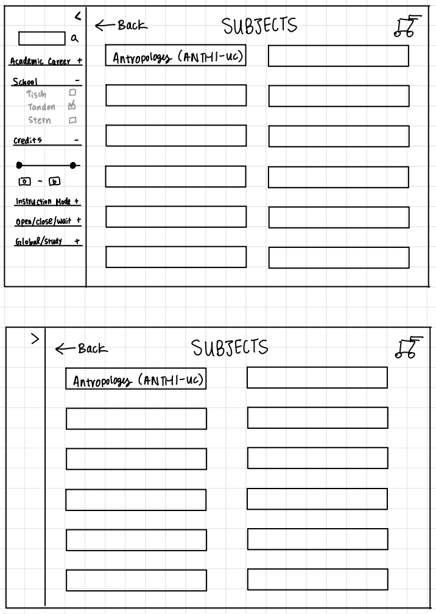
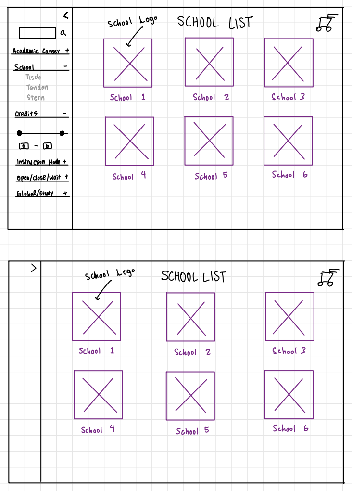
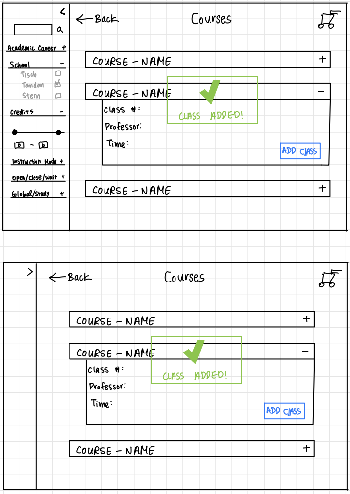
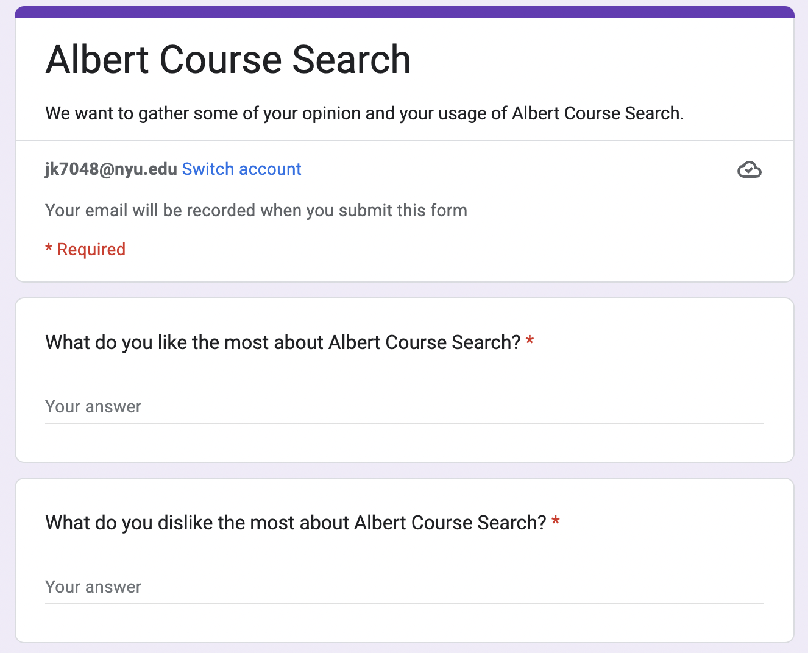
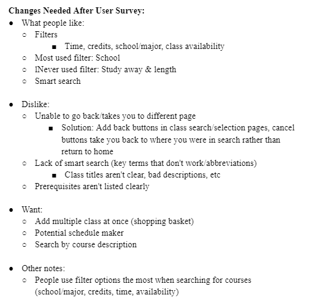
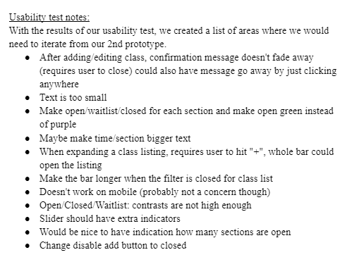
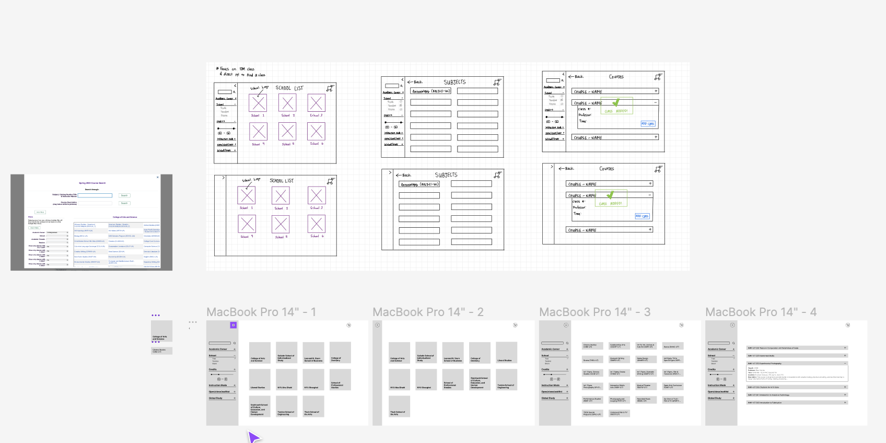
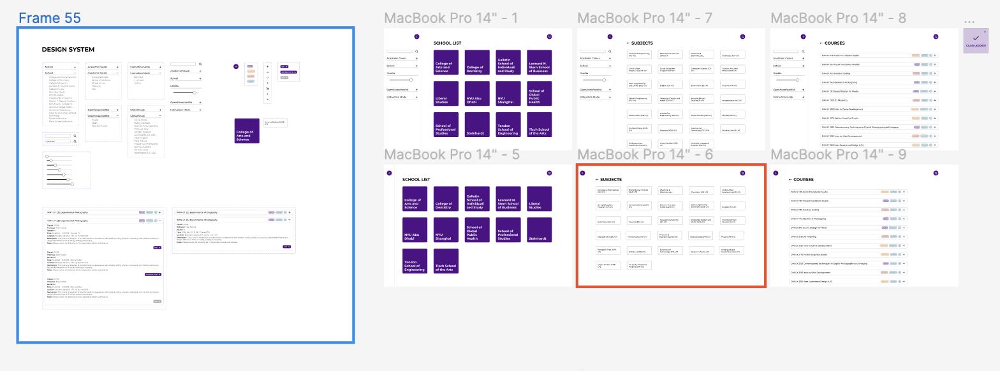
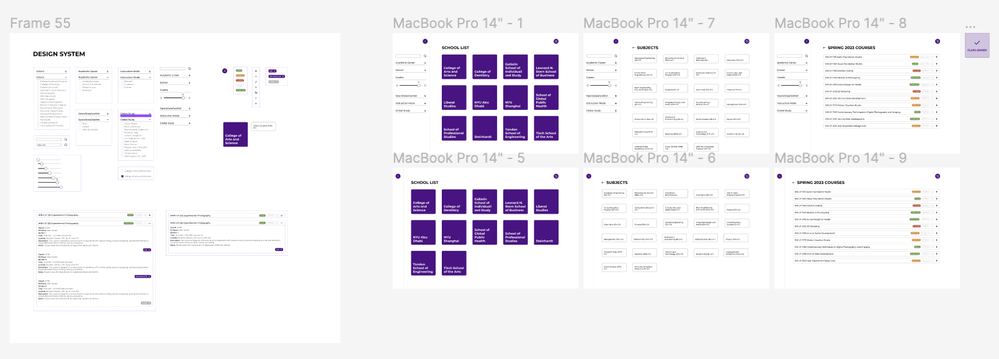

OVERVIEWRedesigning NYU's course search system, Albert, for a more user friendly experience.
SKILLSPrototyping (Figma), Interviewing, User testing
COURSEIdeation & Prototyping
TIME FRAMENovember–December 2022
Redesigning Course Search
A group design project by Marta Pienkosz, Robert Qu, and Jun Hyung Kim
At NYU, our course selection site, Albert, is notorious for being unintuitive, clunky, and generally poorly optimized. In the fall of 2022, I worked on a collaborative group project to rethink and redesign Albert, where we followed a process from ideation phases to a final prototype.
Demo of the current Albert interface
Problem Statement
To get a better focus on what exactly we wanted to solve with this project, we created the following problem statement:
"Albert Course search is not user intuitive and difficult for people to use. We plan to improve the system for users to have a better experience."
Ideation Methods
In order to better understand the problem we were trying to solve, we experimented with the interface and came up with a list of pain points we observed. We also created a mind map to visualize the issues at hand and brainstorm possible solutions.

A mind map with our issues and potential solutions
Following our ideation, we then proceeded to create some wireframes to better visualize the features we wanted. This basic layout illustrated a general layout and expected details of the interface, which would prove helpful in refining our design later.



Research Methods

The Survey
In order to gauge a better understanding of how other NYU students used Albert and their thoughts on the course selection process, we decided to create an online user survey. We had the link to the survey shared among other NYU students to gather relevant data, and tried to keep the questions as open ended as possible. The results from the survey informed us on which features tended to be popular, as well as what often caused the most trouble for students.


We also conducted testing of wireframes and prototypes in person. Users would be given a Figma prototype and asked to add a course. Under our observation, we were able to see if there was potential confusion among users based on their interactions with the interface and take note of such occurrences. We also asked questions about their experience using the prototypes, and whether the experience was positive or if they felt that something could be improved.
Prototypes


The Figma Prototypes
The process of developing our interface was highly iterative. We built multiple Figma prototypes, each improving on feedback received from user testing. Answers from surveys, comments from users, and notes from tests were analyzed and considered in the development of each new prototype. The prototypes also became increasingly interactive and refined in order to create the best experience possible.
Final Product

The final iteration built on the prototypes before it, including what worked previously and improving on what received criticism. While this was the final iteration for this project, had we continued to work on it, we would focus more on building the Albert experience outside of course selection, such as the cart interface or the user's enrolled courses. Other ideas for future exploration could also be something entirely new - such as a calendar that organizes and helps visualize a schedule for the student.